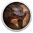

 Vagrus - The Riven Realms: Prologue
Detalles
 |
|
| Tiempo de juego | No Jugado |
| Última actividad | Nunca |
| Añadido | 29/05/2020 11:10:35 |
| Modificado | Nunca |
| Estado de finalización | Not Played |
| Librería | Gog |
| Fuente | GOG |
| Plataforma | PC (Windows) |
| Fecha de lanzamiento | 26/05/2020 |
| Puntuación de la Comunidad | |
| Puntuación de la Crítica | |
| Puntuación de usuario | |
| Género | Fantasy Role-playing Strategy |
| Desarrollador | Lost Pilgrims Studio |
| Editor | Lost Pilgrims Studio |
| Característica | Achievements Single Player |
| Enlaces | Store |
| Tag | |
Descripción


Vagrus - The Riven Realms: Prologue is an early Demo to Vagrus - The Riven Realms, a roleplaying game with a narrative focus, open-world exploration, and strong elements of strategy. The player takes the role of a vagrus - a caravan leader who strives to survive in a strange and dangerous dark fantasy world by leading a traveling company on all kinds of ventures.
Vagrus is currently in development (in late Alpha) but it already has over fifty hours of playable content. The game is coming to GOG.com in the form of Game in Development in the near future.
This Demo showcases the beginning sections of the game - both from the more narrative-driven introductory part and from the open-world main campaign.

A vast realm is yours to explore, filled with unique locations, strange factions, and a colorful cast of characters. In order to punish the Empire for its sins, the Elder Gods unleashed their power a thousand years ago that ended up devastating the realms. The continent is now a wasteland, riddled with arcane anomalies, swarming with twisted monsters, and haunted by roaming undead even after long centuries of rebuilding.

A large selection of stories make up the game’s narrative in the form of events and quests. The choices you make in these often affect your companions and the world around you. Pick your background from trader, mercenary, or explorer; work for factions, follow rumors and trading opportunities; acquire wealth, gain fame, and discover hidden knowledge.

Engage in turn-based, tactical combat that involves your companions and a large variety of enemies, both humanoid and monstrous. Use a wide range of character skills as well as your own leadership-related abilities to succeed. Positioning and support skills are of paramount importance in these challenging engagements.

Journeys have to be planned and prepared for carefully, lest they end in disaster. Manage your supplies, morale, and your crew’s vigor effectively to survive. Haul cargo and valuables across the wasteland or take it from others. Your crew of workers, fighters, scouts, and slaves have to be managed well to optimize their effectiveness.

Recruit from a wide variety of companions to have them serve in versatile caravan roles, such as scoutmaster, guard captain, treasure hunter, or beast handler. Each companion comes with unique combat skills, background stories, and personal quest lines that can upgrade them further when you complete them.